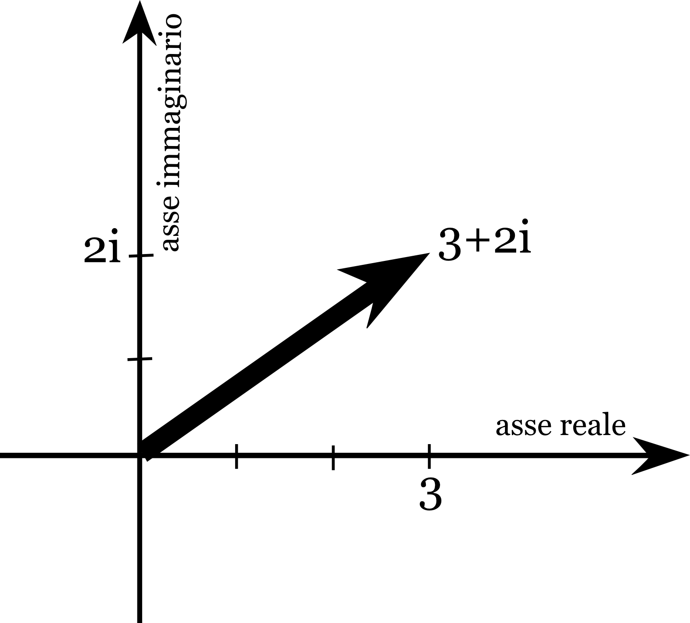
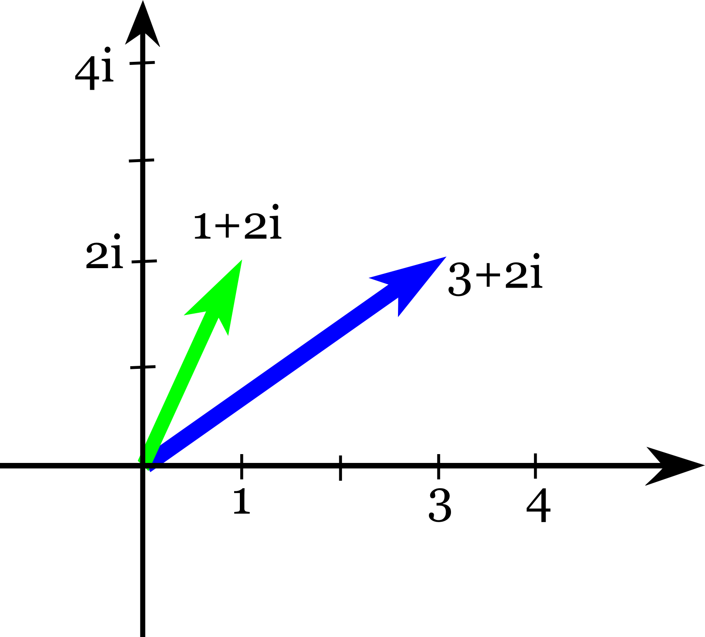
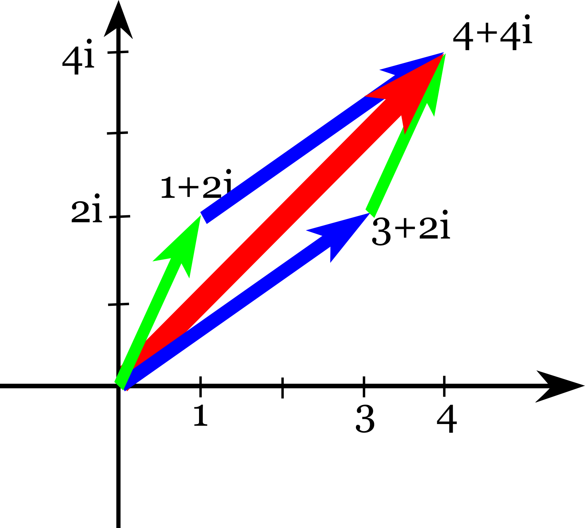

Antefatto
Nell'insieme dei numeri naturali $\mathbb N=\left\{ 0,1,2,3,4,... \right\}$ sono definite le due operazioni di addizione e moltiplicazione, le quali godono di alcune proprietà algebriche (commutativa, associativa, distributiva). Con questo modello riusciamo a rappresentare molti problemi reali, ad esempio quello in cui ci sono insiemi di oggetti indivisibili da distribuire (come avviene nei tipici problemi che si danno nei primi anni delle scuole elementari). Questo modello però ha dei limiti che lo rendono inadeguato per alcune esigenze pratiche come quella di gestire la contabilità in situazioni in cui si può sia dare che ricevere. Un modo di vedere questi limiti è quello di notare che l'equazione $x+1=0$ non ha soluzione nei numeri naturali.
L'insieme dei numeri interi relativi $$ \mathbb Z=\left\{ ...-2,-1,0,1,2,3,4,... \right\} $$ estende l'insieme dei naturali e la sua struttura algebrica in modo tale che ogni equazione del tipo $x+k=0$ ($k \in \mathbb N$) abbia una soluzione. Anche in $\mathbb Z$ abbiamo la moltiplicazione e la somma che godono delle proprietà algebriche che abbiamo notato in $\mathbb N$ (commutatività, associatività, distributività). L'insieme $\mathbb Z$ con le sue operazioni è un modello che incrementa le nostre capacità analitiche: la classe dei problemi che riesce a modellizzare e risolvere è molto più ampia rispetto a quella dell'insieme $\mathbb N$. Anche $\mathbb Z$ però ha dei limiti: rappresenta solo unità intere indivisibili. Ciò è visibile nel fatto che un'equazione come $2x=1$ non ha soluzioni nell'insieme degli interi.
Introduciamo quindi l'insieme dei numeri razionali $\mathbb Q=\left\{ \frac n m | n,m \in \mathbb Z , m\neq 0\right\}$ che estende l'insieme degli interi relativi e la sua struttura algebrica in modo tale che ogni equazione del tipo $ax+b=0$ abbia una soluzione. Anche questa nuova struttura però ha dei limiti: non permette di rappresentare alcune radici quadrate. E anche stavolta ciò è visibile nel fatto che c'è un'equazione come $x^2=2$ che non ha soluzioni nell'insieme dei razionali.
L'insieme dei numeri reali si indica con il simbolo $\mathbb R$ ed estende l'insieme dei razionali con l'aggiunta di nuovi numeri: i numeri irrazionali (numeri che non si possono esprimere come rapporto di interi, tra questi abbiamo $\pi$, $\sqrt{2}$ ed il numero di Nepero $e$). Si potrebbe pensare che questo processo di continua estensione sia stato portato sufficientemente avanti e non sia utile né necessario spingerci oltre. Eppure è possibile fare un passo ulteriore. Vediamo quali sono i limiti di $\mathbb R$ e come possono essere superati.
Definizioni
Dalle regole moltiplicative dei numeri reali si deduce che per ogni numero reale $a$ il suo quadrato è un numero positivo. Come conseguenza di ciò esistono equazioni di secondo grado che non hanno soluzioni reali, come ad esempio: $$ x^2+1=0 $$ infatti questa equivale a $x^2=-1$ che non può avere soluzioni reali poiché uguaglia un quadrato ad un numero negativo.
In analogia con quanto visto prima potremmo provare ad estendere l'insieme $\mathbb R$ introducendo elementi che ci permettano di superare questo limite. Definiamo un nuovo “numero” $i$ che soddisfa la seguente proprietà: $$ i^2=-1 $$ chiamiamo questo elemento “unità immaginaria”. Una volta introdotto $i$, se vogliamo dotare l'insieme di addizione e moltiplicazione dobbiamo includere tutti i multipli e sottomultipli di $i$, cioè numeri come $2i$, $\frac 1 2 i$, $-i$, $\sqrt{2} i$, ... in generale $a i$ con $a$ numero reale. Chiamiamo questi numeri "numeri immaginari".
L'estensione di $\mathbb R$ che stiamo definendo includerà dunque i numeri reali e i numeri immaginari, e poiché vogliamo poter sommare gli elementi dobbiamo includere tutte le possibili somme tra un numero reale e un numero immaginario. Otteniamo quindi numeri "composti" come $1+i$, $2-3i$, $\pi+\sqrt{2}i$, ... in generale $a+ib$.
Chiamiamo l'insieme così ottenuto "insieme dei Numeri Complessi" e lo indichiamo con $\mathbb C$. Il generico elemento dell'insieme avrà la forma $$ a+ib $$ con $a \in \mathbb R$ e $b \in \mathbb R$. Chiameremo $a$ "parte reale" e $b$ "parte immaginaria" del numero complesso.
Notiamo che $i$ non è univocamente definito dal fatto di essere la soluzione dell'equazione $x^2=-1$: se esiste la soluzione $x=i$ deve necessariamente esistere una seconda soluzione: $x=-i$ (infatti $(-i)^2=i^2$). E' facile dimostrare che queste sono le uniche soluzioni della forma $a+ib$. Dunque $i$ e $-i$ sono le due uniche radici quadrate complesse di $-1$.
Aritmetica con i numeri complessi
Le operazioni di addizione e moltiplicazione dei numeri complessi possono essere gestite con le usuali regole di addizione e moltiplicazione di polinomi, ricordando che ogni volta che compare un $i^2$ questo può essere sostituito con $-1$. Analogamente se compare $i^3$ possiamo considerarlo come $i^2\cdot i$ e quindi sarà uguale a $-i$.
Calcoliamo a titolo di esempio il quadrato del numero complesso $2+3i$. Utilizziamo la regola del quadrato di un binomio e otteniamo: $$ (2+3i)^2=(2)^2+2(2)(3i)+9i^2=4+12i-9=-5+12i $$ notare che il risultato è espresso nella forma $a+ib$ e quindi non è ulteriormente semplificabile.
Esercizi:
- Calcola $\left(\frac{\sqrt{2}}2+\frac{\sqrt{2}}2 i\right)^2$.
- Dimostra che se vale $(a+ib)^2=-1$ allora $a+ib=\pm i$.
Inversi moltiplicativi
Per quanto riguarda i numeri razionali e reali è noto che ogni elemento non nullo ha un "inverso moltiplicativo" cioè dato $a$ esiste un altro numero $a^{-1}$ che è l'inverso (moltiplicativo) di $a$ cioè che verifica la proprietà $$ a\cdot a^{-1}=1. $$
Ciò è vero anche per i numeri complessi. Cominciamo con un caso semplice: ci chiediamo qual è l'inverso di $i$. Dobbiamo trovare cioè un numero complesso tale che moltiplicato per $i$ dia come risultato $1$. Poiché sappiamo che $i \cdot i = -1$ deduciamo subito che $-i \cdot i = 1$, quindi l'inverso di $i$ è proprio $-i$.
Consideriamo un caso meno banale: cerchiamo l'inverso di $2+3i$. Vogliamo cioè trovare un numero $x+iy$ tale che succeda questo: $$ (3+2i)(x+iy)=1 $$ sviluppiamo il prodotto e mettiamo in evidenza $i$: $$ (3x-2y)+i(2x+3y)=1. $$ Ora affinché sia vera questa uguaglianza tra i due numeri complessi a destra e a sinistra dell'uguale ($1$ è un numero complesso con parte immaginaria nulla) devono essere uguali le parti reali e immaginarie di ciascuno dei due, quindi si deve avere per la parte reale: $$ 3x-2y=1 $$ e per la parte immaginaria $$ 2x+3y=0. $$ Queste due relazioni danno luogo ad un sistema lineare, svolgendo i calcoli si ottengono le soluzioni $x=\frac 3 {13}$ e $y=-\frac{2}{13}$. Dunque concludiamo che $$ (3+2i)^{-1}=\frac 3 {13} -\frac{2}{13}i. $$ Svolgendo i calcoli si può verificare che si ha effettivamente $$ (3+2i)\left(\frac 3 {13} -\frac{2}{13}i\right)=1. $$
Con questo procedimento è possibile trovare l'inverso di qualsiasi numero complesso non nullo.
Esercizio: calcola l'inverso moltiplicativo di $\frac{\sqrt{2}}2+\frac{\sqrt{2}}2 i$ e di $\frac{\sqrt{3}}2+\frac 1 2 i$.
Numeri complessi come "radicali"
I calcoli con i numeri complessi possono essere gestiti in modo simile a quelli con i radicali (del resto $i$ è una radice di $-1$). Un espediente comune per manipolare algebricamente i radicali è la razionalizzazione. Esempi di razionalizzazione sono: $$ \frac 1 {\sqrt{2}}=\frac 1 {\sqrt{2}} \cdot \frac {\sqrt{2}}{\sqrt{2}}=\frac {\sqrt{2}} 2 $$ oppure sfruttando la regola "somma per differenza": $$ \frac 1 {1+\sqrt{2}}=\frac 1 {1+\sqrt{2}} \cdot \frac {1-\sqrt{2}}{1-\sqrt{2}}=\frac {1-\sqrt{2}} {1-2}. $$ Possiamo fare lo stesso con i numeri complessi, ad esempio: $$ \frac 1 {i}=\frac 1 {i} \cdot \frac {i}{i}=\frac {i} {-1}=-i $$ oppure sfruttando la regola "somma per differenza": $$ \frac 1 {1+i}=\frac 1 {1+i} \cdot \frac {1-i}{1-i}=\frac {1-i} {1-(-1)}. $$ e da questo possiamo concludere che l'inverso moltiplicativo di $1+i$ è $\frac 1 2 -\frac 1 2 i$ (e in effetti se si prova ad eseguire il prodotto applicando la relazione $i^2=1$ il risultato è $1$, come deve essere per due numeri che sono inversi moltiplicativi)
Questi esempi mostrano che è possibile calcolare velocemente l'inverso di un numero complesso nella forma $a+ib$ semplicemente scrivendolo come $\frac {1}{a+ib}$ ed utilizzando la strategia della razionalizzazione: moltiplicare e dividere per $a-ib$ e usare il prodotto notevole "somma per differenza".
Equazioni di secondo grado
L'equazione di secondo grado $x^2+1=0$, come visto all'inizio, non ha soluzioni reali, ma ha soluzioni complesse: abbiamo definito $i$ in modo tale che fosse $i^2=-1$ e dunque è una soluzione, un'altra soluzione è $-i$. Ci possiamo chiedere se possono ancora esistere equazioni di secondo grado (o di grado superiore) che non hanno soluzioni neanche nei numeri complessi. La risposta è no: in effetti tutte le equazioni algebriche in una incognita hanno almeno una soluzione complessa. Per quanto riguarda le equazioni di secondo grado siamo in grado di dire esattamente quali sono le soluzioni complesse utilizzando la formula risolutiva nel seguente modo.
Consideriamo a titolo di esempio l'equazione $x^2+x+1=0$. La formula risolutiva darebbe le soluzoioni: $$ x_{1,2}=\frac{-1\pm\sqrt{-3}}{2} $$ dunque non ci sono soluzioni reali, però possiamo sostituire $\pm\sqrt{-3}$ con i numeri immaginari che al quadrato danno $-3$ (cioè le radici di $-3$) che sono $\pm i\sqrt{3}$, così otteniamo: $$ x_{1,2}=\frac{-1\pm i\sqrt{3}}{2}. $$ Si può verificare che sostituendo questi valori di $x$ in $x^2+x+1$ si ottiene appunto $0$. Con questo metodo si possono individuare le soluzioni complesse di qualsiasi equazione di secondo grado con $\Delta$ negativo.
Il piano di Gauss
Verso la fine del XVII secolo i matematici Gauss e Argand idearono un modo di rappresentare geometricamente i numeri complessi e le operazioni di somma e prodotto. Questo fu il punto di partenza per una rapida evoluzione delle conoscenze matematiche e scientifiche in generale.
Consideriamo il piano cartesiano: chiamiamo l'asse delle ascisse "asse reale" e l'asse delle ordinate "asse immaginario". Rappresentiamo nell'asse reale tutti i numeri reali e nell'asse immaginario tutti i numeri immaginari (numeri come $i$, $2i$, $-\frac 3 2 i$ ...). Un generico numero complesso sarà dato da una somma di una parte reale e una parte immaginaria, come $3+2i$, in questo caso individuiamo il punto del piano che ha coordinata $x$ data dalla parte reale ecoordinata $y$ data dalla parte immaginaria. Ad esempio a $3+2i$ associamo il punto di coordinate $(3,2)$. Associamo quindi al numero complesso $3+2i$ il vettore che parte dall'origine e arriva nel punto $(3,2)$, come in figura:

Ogni numero complesso $a+ib$ pò essere rappresentato geometricamente con un vettore che parte dall'origine e arriva sul punto di coordinate $(a,b)$. Vedremo ora come questo possa risultare utile.
Il piano cartesiano con assi reale e immaginario viene chiamato "piano di Gauss".
Interpretazione geometrica della somma
Consideriamo due numeri complessi $3+2i$ e $1+2i$ e rappresentiamoli sul piano di Gauss come vettori:

Se calcoliamo la somma otteniamo $4+4i$. Se lo andiamo a rappresentare come vettore notiamo che si tratta del vettore che si ottiene dagli altri due utilizzando la regola del parallelogramma:

Questo vale in generale per la somma di qualsiasi coppia di numeri complessi ed è facile convincersi che questa è una conseguenza della definizione di somma tra due vettori come un vettore che ha per coordinate la somma delle coordinate.
Interpretazione geometrica del prodotto
Consideriamo un numero complesso che nel piano di Gauss sia rappresentato da un vettore che tocca la circonferenza goniometrica $x^2+y^2=1$:

Il vettore formerà con l'asse $x$ (in senso antiorario) un angolo $\theta$, e le coordinate del punto di arrivo del vettore saranno allora $(\cos \theta, \sin \theta)$. Questo significa che il numero complesso rappresentato in figura è $\cos \theta + i \sin \theta$.
Consideriamo ora due numeri complessi sulla circonferenza goniometrica che formano gli angoli $\alpha$ e $\beta$ rispettivamente, ovvero i numeri complessi $\cos \alpha + i \sin \alpha$ e $\cos \beta + i \sin \beta$. Calcoliamo il prodotto di questi due numeri: $$ (\cos \alpha + i \sin \alpha)(\cos \beta + i \sin \beta) $$ svolgendo i calcoli (e ricordando che $i^2=-1$) otteniamo $$ (\cos\alpha\cos\beta-\sin\alpha\sin\beta)+i(\cos\alpha\sin\beta+\sin\alpha\cos\beta) $$ se guardiamo con attenzione la parte reale e la parte immaginaria del risultato appena ottenuto possiamo riconoscere le formule di addizione del seno e del coseno, quindi possiamo riscrivere tale espressione così $$ \cos (\alpha+\beta) + i \sin (\alpha+\beta) $$ e dunque concludiamo che il prodotto tra due numeri complessi sulla circonferenza goniometrica ha come risultato un altro numero complesso sulla circonferenza goniometrica che forma un angolo dato dalla somma degli angoli dei numeri di partenza.
Esercizio: determina (senza bisogno di calcolarlo direttamente) quanto vale $$ \left( \frac {\sqrt{3}} 2 +\frac 1 2 i\right)^{6} $$ (individuando parte reale e parte immaginaria).
Se un numero complesso non è sulla circonferenza goniometrica sarà comunque su una qualche circonferenza con centro nell'origine e raggio $r$. Se il numero è ad esempio $3+2i$ la circonferenza su cui si trova avrà un raggio che può essere ricavato calcolando la lunghezza del vettore con il teorema di Pitagora: $r=\sqrt{3^2+2^2}$.
Se il numero complesso si trova sulla circonferenza di raggio $r$ e forma un angolo $\theta$ le sue coordinate saranno (per similitudine): $$ (r \cos \theta, r \sin \theta) $$ e il numero si può scrivere come $$ r \cos \theta+ir \sin \theta=r(\cos \theta+i\sin \theta) $$
Il numero $r$ si chiama "modulo" del numero complesso e l'angolo $\theta$ si chiama "argomento".
Abbiamo appena visto che ogni numero complesso si può esprimere come il prodotto di $r$ (il suo modulo) per un numero complesso $\cos \theta+i\sin \theta$ che è sulla circonferenza unitaria $\cos \theta+i\sin\theta$. Ora immaginiamo di moltiplicare due numeri complessi e sfruttiamo questa decomposizione. Diciamo che il primo numero ha modulo $r_1$ e il secondo $r_2$, mentre gli "argomenti" (cioè gli angoli che formano con l'asse $x$) sono $\theta_1$ e $\theta_2$. Allora il loro prodotto lo possiamo scrivere così: $$ r_1(\cos \theta_1+i\sin \theta_1)r_2(\cos \theta_2+i\sin \theta_2) $$ poi possiamo usare la proprietà commutativa del prodotto e scrivere $$ r_1r_2(\cos \theta_1+i\sin \theta_1)(\cos \theta_2+i\sin \theta_2) $$ ma $\cos \theta_1+i\sin \theta_1$ e $\cos \theta_2+i\sin \theta_2$ corrispondono entrambi a vettori sulla circonferenza unitaria, quindi il loro prodotto è $\cos (\theta_1+\theta_2)+i\sin (\theta_1+\theta_2)$, che è ancora sulla circonferenza unitaria. Quindi il risultato del prodotto è un numero che ha per modulo $r_1r_2$, cioè il prodotto dei moduli, e per argomento $\theta_1+\theta_2$, cioè la somma degli argomenti.
Esercizio: determina quanto vale $$ \left( \sqrt{3} + i\right)^{6} $$
Osserviamo in conclusione che nella nostra definizione di "numero complesso" non c'era alcun riferimento ad angoli ed operazioni con angoli: abbiamo introdotto in $\mathbb R$ un nuovo elemento $i$ tale che $i^2=-1$ senza neppure preoccuparci di eventuali rappresentazioni geometriche. La scoperta che la moltiplicazione tra due numeri complessi è un numero complesso che ha come angolo la somma degli angoli dei fattori è quindi un risultato del tutto inatteso.
Interpretazione geometrica dell'inverso moltiplicativo
Abbiamo definito l'inverso moltiplicativo di un numero $z$ come quel numero $z^{-1}$ che moltiplicato per $z$ da $1$. Chiediamoci qual è l'inverso moltiplicativo di un numero complesso sulla circonferenza goniometrica, cioè della forma $\cos \alpha + i \sin \alpha$, alla luce di quello che abbiamo visto sull'interpretazione geometrica del prodotto.
Osserviamo che anche il numero $1$ è un numero complesso sulla circonferenza goniometrica che individua un angolo nullo, cioè $0+2k\pi$.
Sappiamo che quando moltiplichiamo il numero $z$ di angolo $\alpha$ con quello di angolo $\beta$ otteniamo il numero complesso di angolo $\alpha+\beta$. Affinchè il rusultato del prodotto sia il numero $1$ (come deve essere per due numeri che sono inversi moltiplicativi) che ha angolo $0$ si deve quindi avere $\alpha+\beta=0$, ma questo significa $\beta=-\alpha$. Quindi l'inverso moltiplicativo di $\cos \alpha + i \sin \alpha$ sarà $\cos (-\alpha) + i \sin (-\alpha)$, che è anche uguale a $\cos \alpha-i\sin \alpha$ (perchè?).
Consideriamo adesso un nmero complesso $z$ che non è sulla circonferenza unitaria. Sappiamo già (dal paragrafo precedente) che possiamo scrivere $z=r(\cos \alpha + i \sin \alpha)$, dove $r$ è il modulo. Per cercare l'inverso moltiplicativo di $z$ possiamo allora invertire separatamente $r$ e $\cos \alpha + i \sin \alpha$. L'inverso di $r$ è $\frac 1 r$ (è un numero reale), l'inverso di $\cos \alpha + i \sin \alpha$ è (per quanto detto sopra) $\cos \alpha-i\sin \alpha$. Quindi abbiamo $$ z^{-1}=(r(\cos \alpha + i \sin \alpha))^{-1}=\frac 1 r (\cos \alpha - i \sin \alpha). $$
Esercizi
- Determina l'inverso moltiplicativo di $\frac 1 3 + i \frac 2 3 \sqrt{2}$ (nota che è sulla ciconferenza unitaria) e di $1-i$.
- Ricava le formule per $\sin 3 \alpha$ e $\cos 3 \alpha$ sfruttando l'interpretazione geometrica della moltiplicazione su $(\cos \alpha+i\sin\alpha)^3$.
- Determina tutti i numeri complessi $z$ tali che $z^6=1$.
- Siano $z_1$, $z_2$, $z_3$ numeri complessi sulla circonferenza unitaria tali che $z_1+z_2+z_3=0$. Che tipo di triangolo individuano i punti del piano corrispondenti?
- Dimostra che se $z_1+z_2+z_3+z_4=0$ e $z_1,z_2,z_3,z_4$ sono sulla circonferenza unitaria allora i punti che individuano sul piano sono vertici di un rettangolo.
- Calcola parte reale e parte immaginaria di $$ \frac{\frac 1 2 + \frac {\sqrt{3}} 2 i}{\frac {\sqrt{2}} 2 +\frac {\sqrt{2}} 2 i} $$